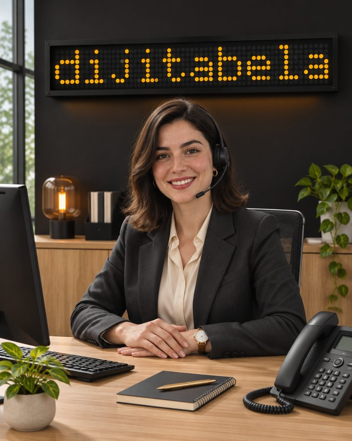
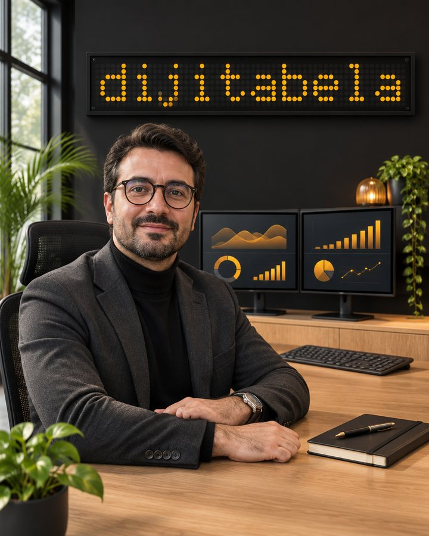
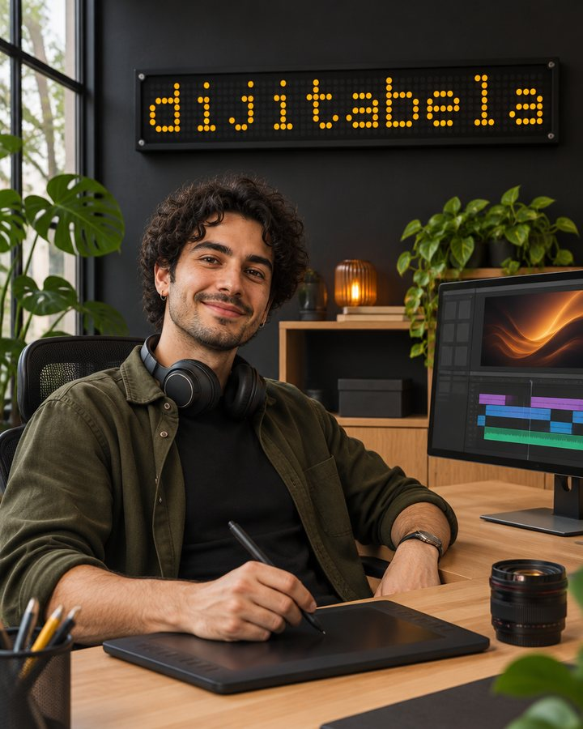
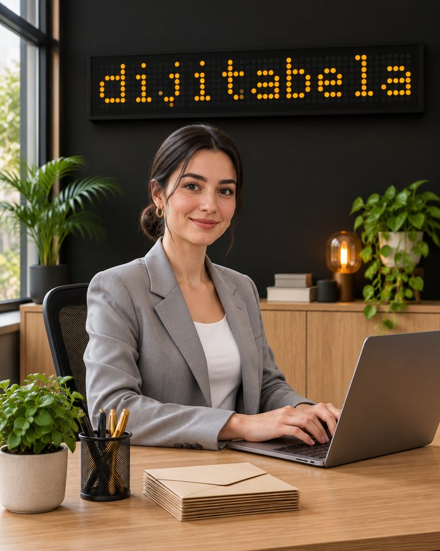
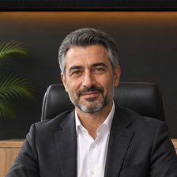
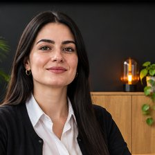
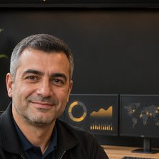

Ekibimiz · Dijital ekip
Her işin bir adı,
bir sahibi var.
Telefona Ayşe, WhatsApp'a Murat, sosyal medyaya Mustafa bakar; müşteri aramayı Kerem üstlenir. Hepsi yapay zekâ destekli dijital çalışanlardır: işletmenizin tekrar eden angaryasını alır, kritik kararı size bırakır. Gerçek insan değiller ve öyle sunmuyoruz.
Yapay zekâ destekli, insan değil
Her ekip üyesi bir yazılımdır. Sayfadaki portreler yapay zekâ ile üretilmiştir, gerçek kişi fotoğrafı değildir; özgeçmiş ya da yıllık deneyim uydurmuyoruz.
Sizin bilgilerinizle konuşur
Fiyatı, saati ve kuralı siz verirsiniz. Bilmediği konuda uydurmaz, size devreder.
Kritik karar insanda
Fiyat pazarlığı, ödeme, şikâyet, sağlık ve hukuk konuları size ve Dijitabela'nın insan ekibine gelir.

Dijital ekip üyesi · 01
Ayşe
Telefon asistanı
Sınırlı pilotYapay zekâ destekli dijital çalışan
Telefon çalıyor, elleriniz dolu. Ayşe açsın.
Siz meşgulken ya da mesai dışında gelen aramayı konuşarak karşılayan yapay zekâ çağrı asistanı.
Ne iş yapar?
- Mesai dışı, meşgul ya da cevapsız kalan aramayı karşılar; kendini baştan yapay zekâ olarak tanıtır.
- Sorulara yalnız sizin onayladığınız bilgilerle cevap verir, bilmediğini uydurmaz.
- Randevu, rezervasyon ve geri arama talebini not alır.
- Her görüşmenin özetini size gönderir; acil ve şikâyet konuları insana aktarılır.
Durum: Ürün sınırlı pilot aşamasındadır: gerçek müşteri araması henüz yapılmadı, denemeler kurgu senaryolarla yapıldı. Canlıya geçmeden örnek görüşmeleri birlikte dinlersiniz.
Dijital ekip üyesi · 02
Murat
WhatsApp müşteri temsilcisi
Yapay zekâ destekli dijital çalışan
Gece gelen mesaj sabaha kadar beklemesin.
WhatsApp'a düşen müşteri mesajına ilk cevabı veren, kısa ve sıcak konuşan yapay zekâ asistanı.
Ne iş yapar?
- Gelen mesaja hemen cevap verir; fiyat, hizmet, çalışma saati gibi soruları sizin verdiğiniz bilgilerle yanıtlar.
- Randevu ya da teklif için gereken bilgiyi toplar, konuşmayı müşteri kaydınıza işler.
- Fiyat pazarlığı, ödeme, şikâyet ve görüşme isteğini her zaman size devreder.
- Yakın zamanda siz o sohbete yazdıysanız araya girmez.

Dijital ekip üyesi · 03
Mustafa
Sosyal medya uzmanı · algoritma analisti
Yapay zekâ destekli dijital çalışan
Ne paylaşacağınızı tahmin değil, ölçüm söylesin.
YouTube, Instagram, TikTok ve Facebook'un neyi öne çıkardığını araştıran, bulduğunu test edip öneriye çeviren yapay zekâ analisti.
Ne iş yapar?
- Dört platformun akışlarını gözler; işe yarayan kancayı, kapağı, başlığı, kurgu ritmini ve saati not eder.
- Bulguyu önce hipotez yapar, sonra testle sınar; kuralı, testle doğrulanmadan “kural” diye sunmaz.
- Hesap başına her gün 1–3 somut iyileştirme önerir: kanca, kapak, başlık, kurgu, biçim ya da paylaşım saati.
- Uydurma rakam ya da kaynak kullanmaz; kuyruğa ve hesap ayarlarına kendi başına dokunmaz, öneri sunar.
Dijital ekip üyesi · 04
Zeynep
Reklam ve sosyal medya yöneticisi
Yapay zekâ destekli dijital çalışan
Hesabınız haftalarca sessiz kalmasın.
Paylaşım düzenini, Google profilini, yorumları ve reklamı takip eden yapay zekâ yöneticisi.
Ne iş yapar?
- Paylaşım takvimini kurar ve yürütür; hesap az ama düzenli paylaşım yapar.
- Google İşletme Profili güncellemelerini ve yorum turlarını takip eder.
- Gelen yorum ve mesajlara markanızın diliyle taslak cevap hazırlar.
- Reklam kurgusunu hazırlar; reklam bütçesine her zaman siz karar verirsiniz.
- Günlük paylaşım ve etkileşim raporu çıkarır.

Dijital ekip üyesi · 05
Arda
Grafiker ve video editörü
Yapay zekâ destekli dijital çalışan
Birkaç fotoğraf yeter, gerisini Arda toparlasın.
Reels, Shorts ve görsel üreten; ritim, kanca ve ses dengesine takıntılı yapay zekâ destekli editör.
Ne iş yapar?
- Çektiğiniz fotoğraf ve videolardan Reels, Shorts ve gönderi hazırlar.
- İlk cümleyi ilk saniyede başlatır; hedef süre 15–25 saniyedir.
- Altyazıyı kutusuz yazar, müziği konuşmayı bastırmayacak seviyede tutar.
- Sesli anlatımı yapay zekâ ses teknolojisiyle üretir.
- Hazır videoyu yayın kuyruğuna koyar; ilk saniyelerde izleyicinin kalma oranını Mustafa ölçer.
Dijital ekip üyesi · 06
Kerem
Müşteri avcısı
Yapay zekâ destekli dijital çalışan
Kimi aramanız gerektiğini liste söylesin.
Sitesi zayıf ya da hiç olmayan yerel işletmeleri bulup aday listesine çeviren yapay zekâ destekli araştırmacı.
Ne iş yapar?
- Google Haritalar ve açık harita verilerinde, seçtiğiniz sektör ve şehirdeki işletmeleri tarar.
- Sitesi zayıf ya da hiç olmayan, yani size ihtiyacı olabilecek işletmeleri öne alır.
- Aynı işletmeyi iki kez listeye almaz; Google'da kapalı görünenleri ve kara listedekileri atlar.
- Listeyi her işletme için gerekçesiyle birlikte sıraya koyar.
Durum: Bu aday bulma düzeni şu an Dijitabela'nın kendi satış çalışmasında kullanılıyor. Sektörünüz ve bölgeniz için uyarlanması ekspertizde konuşulur ve teklif üzerinden kurulur.

Dijital ekip üyesi · 07
Ece
Sekreter · e-posta
Yapay zekâ destekli dijital çalışan
Gelen kutusu sizi değil, siz gelen kutusunu yönetin.
Gelen müşteri e-postalarını ayıran ve cevap taslağı hazırlayan yapay zekâ sekreteri.
Ne iş yapar?
- Gelen müşteri e-postalarını gün boyu izler ve türüne göre sınıflar.
- Önemli olanı öne alır, cevap taslağını hazırlar.
- Günlük özetle hangi mesajın cevap beklediğini gösterir.
Perde arkası
Ekibi ayakta tutanlar
Bunlar doğrudan satılan hizmetler değil; işin kalitesini, düzenini ve yeni fikirleri sağlayan iç ekip üyeleri. Onlar da yapay zekâ destekli dijital çalışanlardır.

Yönetici asistan Ekibin lideri
Hedefi işe böler, işi doğru ekip üyesine verir, teslimi kanıtla kontrol eder. Kanıtsız iş teslim sayılmaz; aynı iş üç kez iade olursa durdurulur ve insana sorulur.
Elif Proje geliştirme
Her gün piyasayı araştırır; satılabilir yeni ürün ya da proje fikrini arama hacmi, rakip ve fiyat kanıtıyla sunar. Talebi kanıtlanmamış fikri önermez.

Defne Satış analisti
“Teklifler neden satışa dönmüyor?” sorusunu görüşle değil veriyle araştırır; her önerisinin bir ölçümü olur.

Ozan Denetim ve bakım
Ekibin çalışmasını düzenli aralıklarla kontrol eder, duran işi yeniden başlatır, tekrar eden arızayı insana bildirir.
Derya Logo ve kurumsal kimlik
Logo ve kimlik işlerinde müşteriyi araştırır, üç özgün yön tasarlar; bilinen bir markaya benzemediğini kontrol eder.
Nasıl işletmenize eklenir?
Önce görürsünüz, sonra karar verirsiniz
- 01
Ekspertiz
Ücretsiz ekspertizde en çok vakit kaybettiğiniz tekrar eden işleri listeleriz.
- 02
Bilgi
Fiyat, hizmet, saat ve kuralları sizden alır, ekip üyesine öğretiriz.
- 03
Deneme
Gerçek senaryolarla test eder, cevapları birlikte düzeltiriz.
- 04
Yayın ve izleme
Devreye girer; ilk haftalarda çalışmayı izleyip iyileştiririz.
Sözleşme olmadan iş başlamaz. Hesaplar ve veriler işletmenizin adına tutulur.
Sık sorulanlar
Merak edilenler
Ekip üyeleri gerçek insan mı?
Hayır. Hepsi yapay zekâ destekli dijital çalışanlardır; yazılım olarak çalışırlar. İsim vermemizin nedeni, her işin bir sahibi ve net bir görev tanımı olması. Arkalarında Dijitabela'nın insan ekibi, kurallar ve kontrol vardır; kritik karar her zaman insandadır.
Müşterilerim yapay zekâyla konuştuğunu bilir mi?
Evet. Ayşe görüşmenin başında kendini yapay zekâ olarak tanıtır; WhatsApp asistanı sorulduğunda dijital asistan olduğunu söyler. Müşteriyi kandırmayız.
Hepsini almak zorunda mıyım?
Hayır. İşletmenize yarayanı seçersiniz. Telefonu çok cevapsız kalan işletme Ayşe ile, mesajı çok gelen işletme Murat ile başlayabilir. Önce ücretsiz ekspertizde hangisinin işinize yarayacağını birlikte görürüz.
Fiyatı nedir?
Ekip üyesine göre değişir; her birinin fiyatı ilgili hizmet sayfasında ve teklif sihirbazında açık yazar. Sözleşme olmadan iş başlamaz.
Yanlış bir şey söylerlerse?
Asistanlar yalnızca sizin verdiğiniz bilgilerle cevap verir. Fiyat pazarlığı, ödeme, şikâyet, sağlık ve hukuk gibi konuları size devreder. Yazışmaları panelden görür, istediğiniz an devralırsınız.
Verilerim ne oluyor?
Kişisel veriler KVKK'ya uygun işlenir; müşteri verileriniz model eğitimi için kullanılmaz.
Ayşe gerçek müşteriyle çalışıyor mu?
Henüz hayır. Ayşe sınırlı pilot aşamasındadır; şimdiye kadarki denemeler kurgu senaryolarla yapıldı. Canlıya geçmeden örnek görüşmeleri birlikte dinlersiniz.
Hangi ekip üyesi işinize yarar?
Ücretsiz ekspertizde işletmenizi inceler, size en çok zaman kazandıracak ekip üyesini önerir ve fiyatı baştan söyleriz. Telefon ve WhatsApp: 0501 945 21 84.